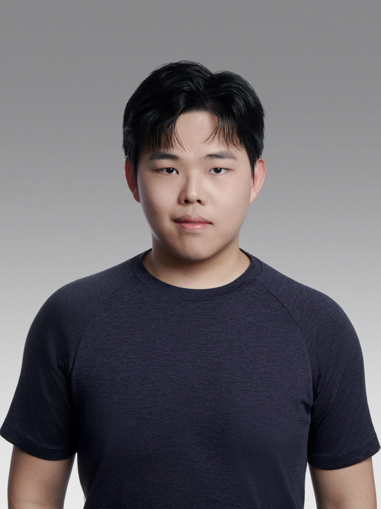

Observe first
Find the behavior behind the request, not only the surface problem.
About / 2027 Product Design New Grad
Research-driven. Growth-minded. Systems-oriented. Currently designing consumer AI growth at Chance.

Approach
I like the messy middle: where user behavior, business goals, technical constraints, and visual craft collide. My role is to make that complexity legible enough for a team to make decisions.
My strongest work starts with research and turns into product structure: clearer workflows, better activation moments, and interfaces that make complicated systems feel calm enough to use.
Outside of case studies, I keep a playground for motion, creative coding, photography, and visual experiments because interaction taste is built through practice.
Find the behavior behind the request, not only the surface problem.
Turn scattered signals into flows, hierarchy, defaults, and decisions.
Use language and motion to clarify state without creating noise.
Experience
Designing consumer AI workflows, activation logic, and commercial UI systems for product growth.
Worked on healthcare AI experience strategy, information clarity, onboarding, and AI guidance concepts.
Translated research with 27 restaurants into a daily action center and unified order workflow.
Synthesized VOC data, interviews, and survey validation into service and product recommendations.
Education
BFA in User Experience Design
GPA 4.0 / Excellence Scholarship
Skills
User Research / VOC Synthesis / Journey Mapping / Survey Validation
AI UX / Growth UX / Product Strategy / Interaction Motion / Commercial UI
Figma / Framer / HTML, CSS & JavaScript / AI Workflows
Current Interests
How uncertainty, progress, control, and recovery should feel in intelligent products.
Small interactions used to study timing, state, and interface behavior.
Transitions as product feedback and orientation instead of decoration.
References from editorial systems, product UI, posters, and film frames.